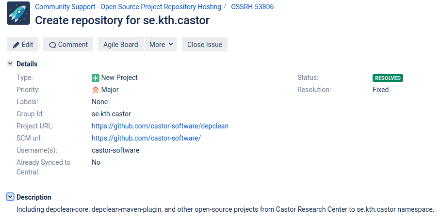

Maven Central is the de-facto repository for hosting software artifacts that compile to the JVM. In this post, I’ll describe the process of releasing a new artifact in Maven Central following an step-by-step approach.
A staging repository is already configured for the requested GroupId, you need to find someone with a deployer role that comment on the ticket to verify your request. Below is an example of a ticket that I created requesting a repository for the namespace se.kth.castor

The ticked review is a manual process, it normally takes less than 2 business days.
2. Configuring the POM
After the approval of the ticket, you need to add additional information to the POM of the Maven project or module to be deployed. Follow the steps below exactly as they are.
Follow this instructions to encrypt your artifact with gpg2 and distribute your public key to a key server (e.g., http://keys.gnupg.net). Do not forget to choose a passphrase to protect your secret key. Then add your gpg credentials with your passphrase to your Mavensettings.xml file locally:
Finally, run a deployment to OSSRH and an automated release to the Central Repository with the following command:
1
mvn clean deploy
After this, Central sync will be activated for your namespace. After you successfully deploy, your component will be published to Maven Central, typically within 10 minutes, though updates to search.maven.org can take up to two hours.
If you have any issue, let me know in the comments below. Happy deploying
 software, tutorial
software, tutorial